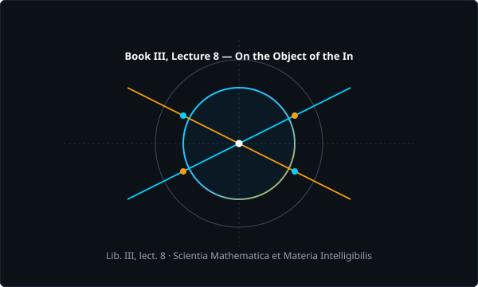

Book III, Lecture 12 — Why the Soul Never Understands Without a Phantasm and How Mathematical Entities Are Understood in Abstraction¶
Liber III, Lectio 12 — Quod nequaquam sine phantasmate intelligit anima et quomodo mathematica in abstractione intelliguntur

[lib. 3 l. 12 n. 1 · Marietti #764] After the Philosopher determined concerning the intellect in itself, here he determines concerning the intellect in comparison with sense. And concerning this he does two things: first, he shows of what sort the motion of sense is; second, he likens the motion of the intellect to the motion of sense, at Sensing, therefore, indeed. He says, therefore, first, that the sensible appears to make the sensitive part exist in act from having been in potency. For the sensible does not act upon sense in the way a contrary acts upon its contrary, so as to cast something out from it by transmuting and altering it, but solely reduces it from potency into act. And this is what he adds, namely, that the sensitive power neither undergoes passion nor is altered by the sensible by passion and alteration strictly taken—that is, insofar as this proceeds from contrary into contrary.
[lib. 3 l. 12 n. 2 · Marietti #765] And because the motion that exists in corporeal things, concerning which he determined in the Physics, is from contrary into contrary, it is manifest that sensing, if it be called a motion, is another species of motion from that concerning which he determined in the Physics. For that motion is the act of a being existing in potency, inasmuch as while receding from one contrary, so long as it is being moved, it does not yet attain the other contrary, which is the term of the motion, but remains in potency; and because everything that is in potency, insofar as it is such, is imperfect, therefore that motion is the act of the imperfect. This motion, however, is the act of the perfect: for it is the operation of sense already made in act through its species. For sensing does not belong to sense except as existing in act; and therefore this motion is altogether other than physical motion. And motion of this sort is strictly called operation, such as sensing, understanding, and willing. And according to this motion the soul moves itself according to Plato, inasmuch as it knows and loves itself.
[lib. 3 l. 12 n. 3 · Marietti #766] Next, when he says Sensing, therefore, he likens the motion of the intellect to the motion of sense. And concerning this he does two things: first, he shows how motion proceeds in sense; second, he shows that it proceeds similarly in the intellect, at Now to the intellective. He says, therefore, first, that since the sensible reduces the sensitive power into act without passion and alteration, just as was stated above regarding the intellect, it is manifest from what has been said that sensing itself is similar to understanding—in such a way, however, that when there is sensing alone, that is, apprehending and judging according to sense, this is similar to what is speaking and understanding alone, namely when the intellect judges and apprehends something; which is to say that the simple apprehension and judgment of sense is likened to the speculation of the intellect. Yet when sense senses something pleasant or painful—as though affirming and denying that what is perceived by sense is pleasant or painful—then it pursues or shuns through appetite, that is, it desires or flees. And he says pointedly as though affirming or denying, because making affirmation and negation is proper to the intellect, as was stated above; yet sense performs something similar to this when it apprehends something as pleasant or painful.
[lib. 3 l. 12 n. 4 · Marietti #767] And in order that it may be known what experiencing pleasure and experiencing pain are, he adds that experiencing pleasure and experiencing pain is acting with the sensitive mean—that is, a certain action of the sensitive power, which is called a mean inasmuch as the common sense is compared to the proper senses as a certain middle, just as the center is compared to the lines terminating at it. Yet not every action of the sensitive part is experiencing pleasure and pain, but that which is with respect to good or evil insofar as they are such. For the good of sense—namely, what is suitable to it—causes pleasure, whereas the evil—what is repugnant and harmful—causes pain. And from experiencing pain or pleasure follow flight and appetite, that is, desire, which are according to act.
[lib. 3 l. 12 n. 5 · Marietti #768] It is clear, therefore, that the motion of the sensible upon sense proceeds as though by a threefold step: for first it apprehends the sensible itself as suitable or harmful; second, from this follow pleasure and pain; and third, there follow desire or flight. And although desiring, fleeing, and sensing are distinct acts, nevertheless their principle is the same in subject, though differing in account. And this is what he adds, namely, that the appetitive and the avoidant—that is, the part of the soul that flees and desires—are not distinct in subject either from each other or from the sensitive part, yet their being is distinct, that is, they differ in account. And he says this against Plato, who placed the organ of the appetitive power in one part of the body and the organ of the sensitive power in another.
[lib. 3 l. 12 n. 6 · Marietti #769] Next, when he says Now to the intellective, he likens the process of motion in the intellect to what has been stated regarding sense. And concerning this he does two things: first, he shows how it stands regarding sensible things; second, how it stands toward those things that are separated from sensible things, at Now by abstraction. Concerning the first he does two things: first, he shows how the intellect stands regarding sensible things in action; second, he compares the active intellect with the speculative, at And altogether in action. Concerning the first he does two things: first, he likens the process of the intellect to the process of sense; second, he manifests the likeness, at For just as the air. He says, therefore, first, that phantasms stand to the intellective part of the soul just as sensibles stand to sense. Hence, just as sense is moved by sensibles, so the intellect is moved by phantasms. And just as when sense apprehends something as pleasant or painful it pursues or flees it, so too when the intellect apprehends something, affirming or denying that it is good or evil, it flees or pursues.
[lib. 3 l. 12 n. 7 · Marietti #770] Now from Aristotle‘s very manner of speaking a twofold difference between the intellect and sense is to be noted. First, in sense there were three steps: for from the apprehension of good or evil there did not immediately follow desire or flight, as happens here regarding the intellect; rather, pleasure and pain followed, and from this further desire and flight. The reason for this is that just as sense does not apprehend universal good, so the appetite of the sensitive part is moved not by universal good or evil, but by a certain determinate good that is pleasant according to sense, and a certain determinate evil that is painful according to sense. In the intellective part, however, there is the apprehension of universal good and evil; hence too the appetite of the intellective part is moved immediately upon the apprehension of good or evil.
[lib. 3 l. 12 n. 8 · Marietti #771] The second difference is that of the intellect he says without qualification that it affirms or denies, whereas of sense he says that it ‘as it were’ affirms or denies, the reason for which is clear from what has been said. Moreover, from what he had stated he concludes further that if phantasms stand to the intellective soul as the sensible stands to sense, then just as sense cannot sense without a sensible, so the soul cannot understand without a phantasm.
[lib. 3 l. 12 n. 9 · Marietti #772] Next, when he says For just as, he manifests the likeness set down: first, as regards his statement that phantasms are like sensibles to the intellective soul; second, as regards his statement that when it affirms or denies good or evil, it flees or pursues, at The species, therefore, indeed. He says, therefore, first, that the air altered by color makes the pupil to be of such a sort—that is, qualifies it by impressing upon it the species of color—and the pupil itself, thus altered, alters something further, namely the common sense; and likewise hearing, altered by the air, alters the common sense. And although the external senses are several, nevertheless the ultimate term at which the alterations of these senses terminate is one, because it is like a single mean among all the senses, just as a center at which all lines terminate as at one middle.
[lib. 3 l. 12 n. 10 · Marietti #773] And although that middle of all the senses is one in subject, nevertheless its being is plural—that is, its account is diversified insofar as it is compared to diverse senses. And this is that by which the soul discerns wherein sweet and hot differ, concerning which we spoke earlier when treating of it in itself; and now too we must speak of it in comparison with the intellect, because it is something one with respect to all sensibles, just as the intellect is the term of all phantasms. And just as on that side there were many things judged by one power, so too these things on the side of the intellect stand in a certain proportional manner—that is, in a way proportionally corresponding to the one power judging regarding sensibles, or else there is a likeness as regards the number of things judged, inasmuch as the intellect stands to both things between which it discerns just as those stood to one another, namely, just as the one common sense stood to the diverse sensibles between which it discerned.
[lib. 3 l. 12 n. 11 · Marietti #774] And it makes no difference whether, by way of example, we take either non-homogeneous things—that is, diverse sensibles not of a single genus, such as white, which is in the genus of color, and sweet, which is in the genus of flavor, between which the common sense discerns—or whether we take contraries, such as white and black, which belong to a single genus, because the common sense discerns between both.
[lib. 3 l. 12 n. 12 · Marietti #775] Let us take, therefore, a in place of white, and b in place of black, so that a (white) stands to b (black) just as c stands to d—that is, as the imagination of white stands to the imagination of black. Consequently, by alternation of proportions, a also stands to c just as b stands to d—that is, white to the phantasm of white just as black to the phantasm of black—and thus the intellect stands to c and to d, namely to the phantasm of white and of black, just as sense stands to a and b, that is, to white and black. If, therefore, c and d—that is, the phantasms of white and black—exist within one power, namely are judged by one intellect, they will stand just as a and b, that is, white and black, which are judged by one sense; in such a way that just as the sense judging between these two was one in subject while differing in account, so too will it be with the intellect. And the same reasoning holds if we take non-homogeneous things, namely that a be sweet and b be white.
[lib. 3 l. 12 n. 13 · Marietti #776] Next, when he says The species, indeed, he manifests what he had stated above—namely, that when the intellect affirms or denies good or evil, it flees or pursues—concluding from what has been said that the intellective part of the soul understands species abstracted from phantasms. And just as something to be pursued or fled is determined for the intellect in those things, namely in sensibles when they are present, so too it is moved toward pursuing or fleeing when they arise in phantasms outside external sense, that is, when phantasms are represented in the absence of sensibles.
[lib. 3 l. 12 n. 14 · Marietti #777] And he sets down an example of each. First, when one is moved at the presence of sensibles: as when a man sensing something to be fled—that is, something fearful, say some uproar, as when he sees that a fire has been kindled in the city—upon seeing the fire moving, knows by the common—that is, by some common discriminative power, or by the common, that is, from what commonly tends to happen—he knows, I say, that battle is underway, or that an enemy is fighting; and thus the intellect is sometimes moved to flee or to pursue from a present sensible. At other times, however, from the phantasms or intelligibles that are in the soul, one reasons and deliberates about future or present things just as though actually seeing them; and when one judges something to be joyful or sorrowful, one flees it or pursues it, just as in the former case when moved by a present sensible.
[lib. 3 l. 12 n. 15 · Marietti #778] Next, when he says And altogether, he compares the cognition of the practical and speculative intellect, saying that the true and the false—that is, true and false cognition of the intellect—in action, that is, insofar as it pertains to the practical intellect, and without action, that is, insofar as it pertains to the speculative intellect, is in the same genus, whether that genus be good or evil. This can be understood in two ways. In one way, such that the thing understood either practically or speculatively is sometimes good and sometimes evil, nor is the genus of the thing diversified on account of its being considered speculatively or practically. In another way, it can be understood such that true cognition itself is a certain good of the intellect, whether speculative or practical, and false cognition itself is a certain evil of the intellect, whether speculative or practical.
[lib. 3 l. 12 n. 16 · Marietti #779] He does not, therefore, intend to compare the true and the false to good and evil according to generic agreement, but rather the true and the false that is in action to the true and the false that is without action. And this is clear from the difference he adds, saying that what is in action and what is without action differ by the unqualified and the particular. For the speculative intellect considers something to be true or false in the universal, which is to consider without qualification; whereas the practical intellect does so by applying it to a particular operable thing, because operation deals with particulars.
[lib. 3 l. 12 n. 17 · Marietti #780] Next, when he says Now by abstraction, because the Philosopher had stated that the soul never understands without a phantasm, while phantasms are received from sense, he wishes to show how our intellect understands those things that are separated from the senses. And concerning this he does two things: first, he shows how it understands mathematical things, which are abstracted from sensible matter; second, he inquires whether it understands those things that are separated from matter according to being, at Now whether it happens. Concerning the first, it must be considered that among things conjoined in reality, one can be understood without the other, and truly so, provided that one of them is not included in the definition of the other. For if Socrates is musical and white, we can understand whiteness while understanding nothing of music; yet I cannot understand man while understanding nothing of animal, because animal is included in the definition of man. Thus, therefore, in separating according to the intellect things that are conjoined in reality in the aforesaid manner, no falsehood occurs.
[lib. 3 l. 12 n. 18 · Marietti #781] If, however, the intellect should understand things that are conjoined to exist separately, the intellect would be false—for instance, if in the aforesaid example it were to assert that the musical man is not white. Yet the intellect abstracts those things that exist in sensibles not indeed by understanding them to exist separately, but by understanding them separately or apart. And this is what he says, namely, that the intellect understands the things spoken of by abstraction, that is, mathematical things, in the following manner: whereas while understanding the snub insofar as it is the snub, it does not understand the snub separately—that is, apart—from sensible matter, because sensible matter, namely the nose, falls within the definition of the snub.
[lib. 3 l. 12 n. 19 · Marietti #782] If, however, the intellect actually understands something insofar as it is curved, it understands it without flesh insofar as it is curved—not indeed in such a way as to understand the curved to exist without flesh, but because it understands the curved without understanding flesh; and this is because flesh is not placed in the definition of the curved. And in this way the intellect understands all mathematical things separately, just as though they were separated, even though they are not separated in reality.
[lib. 3 l. 12 n. 20 · Marietti #783] Yet it does not understand natural things in this way, because sensible matter is placed in the definition of natural things, whereas it is not placed in the definition of mathematical things. Regarding natural things, however, the intellect abstracts the universal from the particular in a similar manner, inasmuch as it understands the nature of the species without the individuating principles, which do not fall within the definition of the species. And altogether the intellect in act is the thing understood, because just as things possess or do not possess matter in their definition, so are they perceived by the intellect. And because Plato failed to consider this mode of abstraction, he was compelled to posit separate mathematical entities and separate Species; whereas in place of this, in order to carry out the aforesaid abstraction, Aristotle posited the agent intellect.
[lib. 3 l. 12 n. 21 · Marietti #784] Next, when he says Now whether, he raises a question concerning those things that are separated from matter according to being, saying that it will have to be considered later whether it happens that our intellect, while not separated from magnitude—that is, from the body—understands anything among separate things, that is, any separate substance. For this question could not be determined here, because it was not yet manifest that there exist any separate substances, nor which or of what sort they may be. Hence this question belongs to the metaphysician; yet it is not found solved by Aristotle, because the completion of that science has not yet come down to us, either because the whole book has not yet been translated, or because perhaps, overtaken by death, he did not complete it.
[lib. 3 l. 12 n. 22 · Marietti #785] Nevertheless, it must be noted that here he calls the intellect ‘not separated from the body’ inasmuch as it is a certain power of the soul, which is the act of the body; whereas above he called it ‘separated from the body’ because it has no bodily organ assigned to its operation.